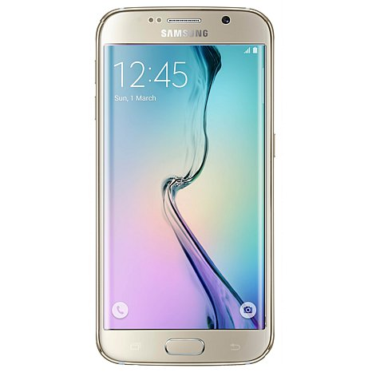

Introduction
How big of an impact can a small change have? The Samsung Galaxy S6 edge has only the extra screen curves compared to the vanilla Galaxy S6, but these two phones couldn't feel any more different - it's a difference that you can readily feel when you hold them in your hand.
Different, and yet the same, the two Galaxy S6 phones share some of the best components available, tied together with software built on new philosophy to match the new hardware ideology. Here's the recap of the key specs and disadvantages and... please, pardon the deja vu feel.
Key features
Curved screen, thin (7mm) profile, premium dual-glass design reinforced by a metal frame 5.1" Super AMOLED of QHD (1440 x 2560) resolution, class-leading ~577ppi, Corning Gorilla Glass 4 Exynos 7420 64-bit chipset, octa core processor with four 2.1GHz Cortex-A57's and four 1.5GHz Cortex-A53 cores, Mali-T760 MP8 GPU, 3GB of RAM Android 5.0.2 Lollipop with TouchWiz and Samsung Pay 16MP camera, f/1.9 aperture, 4K video recording, LED flash, optical image stabilization 5MP front-facing camera, f/1.9 aperture, 1440p QHD video, HDR 32/64/128 GB of built-in storage (64GB comes as standard issue on some markets) Active noise cancellation via dedicated mic New generation of fingerprint scanner LTE Cat.6, Wi-Fi a/b/g/n/ac, GPS/GLONASS/Beidou, NFC, IR port, Bluetooth 4.1, ANT+ Heart-rate sensor, barometer, SpO2 Built-in wireless charging (Qi/PMA) 2,600mAh battery
Main disadvantages
Pricier than its sibling, with only the curved screen to show for it. No water or dust protection. No user-replaceable battery. No microSD slot. No FM radio. No stereo speakers. Samsung spun off a whole new Galaxy line, the A (or Alpha) series, to practice making phones with proper metal frame and then got back to the drawing board and came out with the new design language of the Galaxy S6 family. Combining the metal frame with a dual-glass build (front and back) is certainly not the most novel design solution but it's one that works well and it's a first for Samsung's smartphones. And despite being their first attempt at this design approach, the Galaxy S6 came out borderline perfect - perhaps lacking on novelty, but excelling in implementation. The Galaxy S6 edge however takes it even further for those who want something that much more special. It comes with an off-the-chart novelty factor and is rightfully priced higher than the regular Galaxy S6.